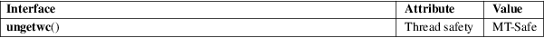

ungetwc − push back a wide character onto a FILE stream
Standard C library (libc, −lc)
#include <wchar.h>
wint_t ungetwc(wint_t wc, FILE *stream);
The ungetwc() function is the wide-character equivalent of the ungetc(3) function. It pushes back a wide character onto stream and returns it.
If wc is WEOF, it returns WEOF. If wc is an invalid wide character, it sets errno to EILSEQ and returns WEOF.
If wc is a valid wide character, it is pushed back onto the stream and thus becomes available for future wide-character read operations. The file-position indicator is decremented by one or more. The end-of-file indicator is cleared. The backing storage of the file is not affected.
Note: wc need not be the last wide-character read from the stream; it can be any other valid wide character.
If the implementation supports multiple push-back operations in a row, the pushed-back wide characters will be read in reverse order; however, only one level of push-back is guaranteed.
The ungetwc() function returns wc when successful, or WEOF upon failure.
For an explanation of the terms used in this section, see attributes(7).

C11, POSIX.1-2008.
POSIX.1-2001, C99.
The behavior of ungetwc() depends on the LC_CTYPE category of the current locale.
fgetwc(3)